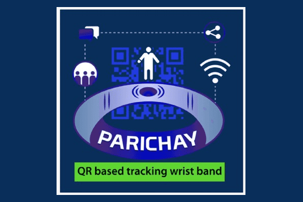

Gangasagar witnesses a large gathering of pilgrims every year. During the Mela, some visitors, especially elderly people and children, may get separated from their family members. To assist such pilgrims, Lost & Found Camps and dedicated support services are arranged at important locations.
These services help identify missing persons, provide assistance and facilitate their reunion with family members and companions.

QR & BARCODE BASED WATERPROOF WRISTBAND FOR
TRACKING THE LOST PERSONNEL
The Bajrang Parishad, an NGO based at Gangasagar, helps the pilgrims who get lost by providing them with food and a comfortable bed on the island. They make constant announcements through loudspeakers in regional languages to reconnect them with their families. Many of them are old and do not have phone numbers or addresses. All they can do is wait desperately for someone to pick them up. It is a heart-breaking sight, especially considering that a lot of the pilgrims have been intentionally abandoned by family members. Many elderly persons are given instructions to wait in a certain place by a family member, but they never return.
As a result, the administration will continue its innovative initiative "Parichay"—a QR Wristband for pilgrims' convenience—this year in 2023 to reduce lost and found cases. The bands will be offered to elders & minors free of charge at buffer zones to keep track of them. In cases of lost and found, volunteers can retrieve their information from the wristbands and enter it into the database to reunite them with their lost companions during Mela days.
Lost & Found Support Services
Assistance and support for pilgrims at important locations
Lost & Found Camps
Dedicated camps at important locations help pilgrims report missing family members and receive assistance.
Public Announcements
Announcements through loudspeakers in regional languages help locate missing persons and reconnect families.
Volunteer Assistance
Volunteers help missing pilgrims with guidance, necessary support and communication with their family members.
Lost & Found Camp Locations
Contact details of Lost & Found Camps at different locations of Gangasagar
| Sl. No. | Name of Installation Place | Facility | Point | Area | Contact No. |
|---|---|---|---|---|---|
| 01 | Gangasagar Mela Ground Lost & Found Camp (Near Info Tower) | STD | Booth | Sagar | 03210-241117 |
| 02 | K1 Bus Stand, Sagar Road No. 3, At Lost & Found Camp | STD | Booth | Sagar | 03210-241131 |
| 03 | Namkhana Mela Ground Lost & Found Camp | STD | Booth | Namkhana | 03210-241140 |
| 04 | Chemaguri Bus Stand Lost & Found Camp | STD | Booth | Chemaguri | 03210-241155 |
| 05 | Kachuberia Mela Ground Lost & Found Camp | STD | Booth | Kachuberia | 03210-241179 |
| 06 | Hardwood Point Mela Lost & Found Camp | STD | Booth | Lot-8 | 03210-241207 |
| 07 | Lot-8 Mela Lost & Found Camp | STD | Booth | Lot-8 | 03210-241208 |
Please verify camp availability and contact numbers with the local administration before visiting.
Need Help? We Are Here for You!
If you find a missing person or get separated from your family members during Gangasagar Mela, please approach the nearest Lost & Found Camp or seek assistance from authorised volunteers.